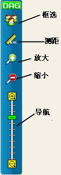

主界面布局
主界面布局
配置用户登录成功后，系统显示出客户端的操作主界面，主界面整体布局如下图1所示。。主界面主要由操作菜单栏、成员树、日志、呼叫工具栏、鹰眼、地图导航栏、地图主界面以及上行呼叫记录栏组成。配置用户通过主界面主要完成基础信息和编组信息的维护操作。

图1. GIS调度系统配置用户主界面
| （1） 菜单栏 | （2） 地图切换按钮 | （3） 地图操作工具栏 | （4） 鹰眼 |
 地图主界面
地图主界面
地图主界面主要显示当前地图的区域。调度员可以对地图进行拖动、缩放等操作。
 菜单栏
菜单栏
菜单栏位于主界面的顶部，布局如下图3所示。
图3. 操作菜单栏
利用菜单栏，我们可以查看（删除/修改）单位、终端、移动用户、调度员以及编组的详细信息，在菜单栏的最右端显示登录的配置用户的名称。
 地图切换按钮
地图切换按钮
地图切换按钮位于地图界面的右侧，布局如下图4所示。
图4. 地图切换按钮
点击该按钮，用户可在平面图和卫星图之间切换。
 地图操作工具栏
地图操作工具栏
地图操作工具栏位于地图界面的最右侧，布局如下图5所示。

图5. 地图操作工具栏
用户可在该区域实现框选、测距、放大、缩小、平移、导航等地图功能。
 鹰眼
鹰眼
地图主界面右下角，提供了鹰眼功能，如下图7所示。

图7. 鹰眼示意图
所谓鹰眼，就是一个缩略地图，鹰眼的矩形区域就是当前显示的地图区域，拖动矩形框可以改变主地图的显示位置，起到导航的作用。
Copyright © 2012 Eastcom, Inc. All rights reserved. |
||